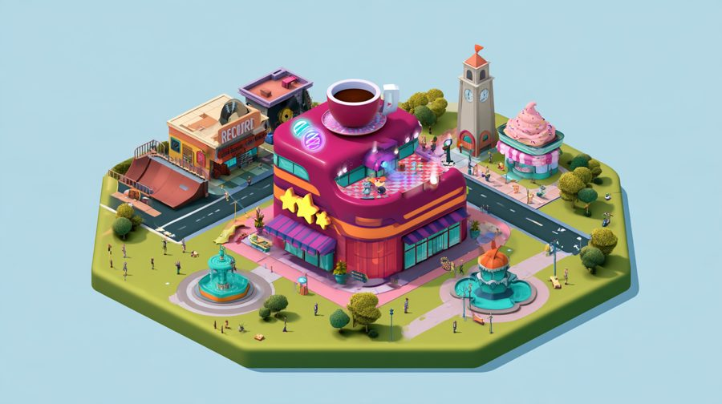
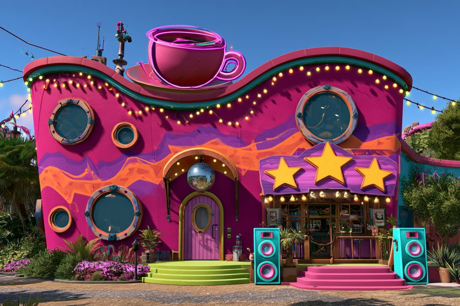
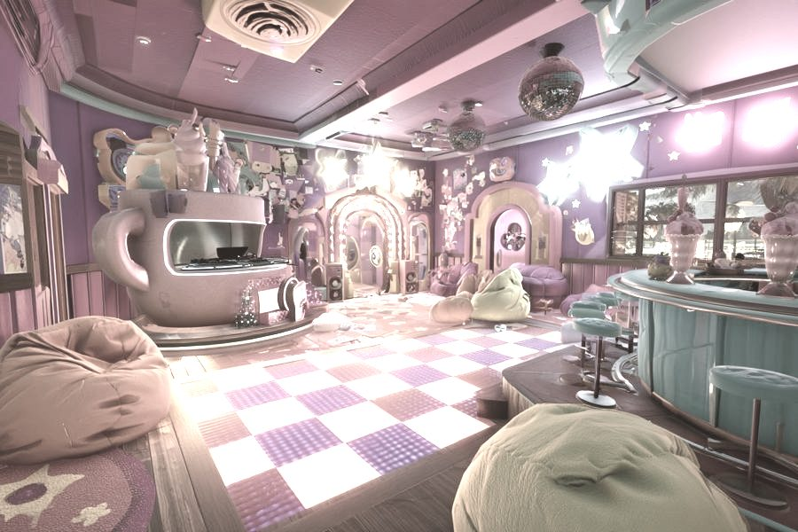
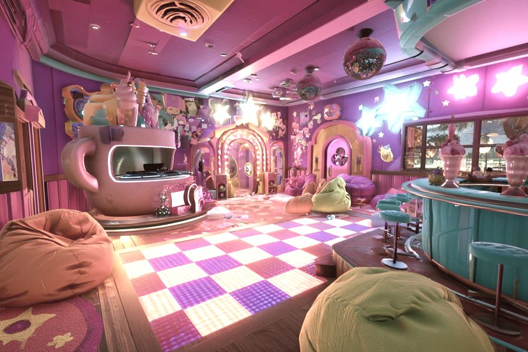
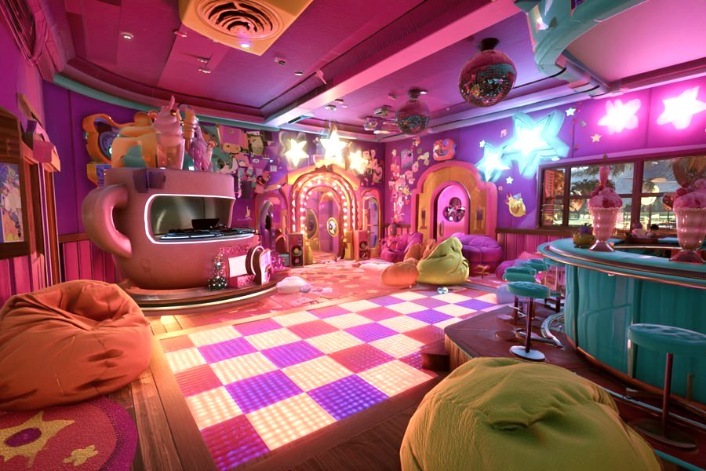
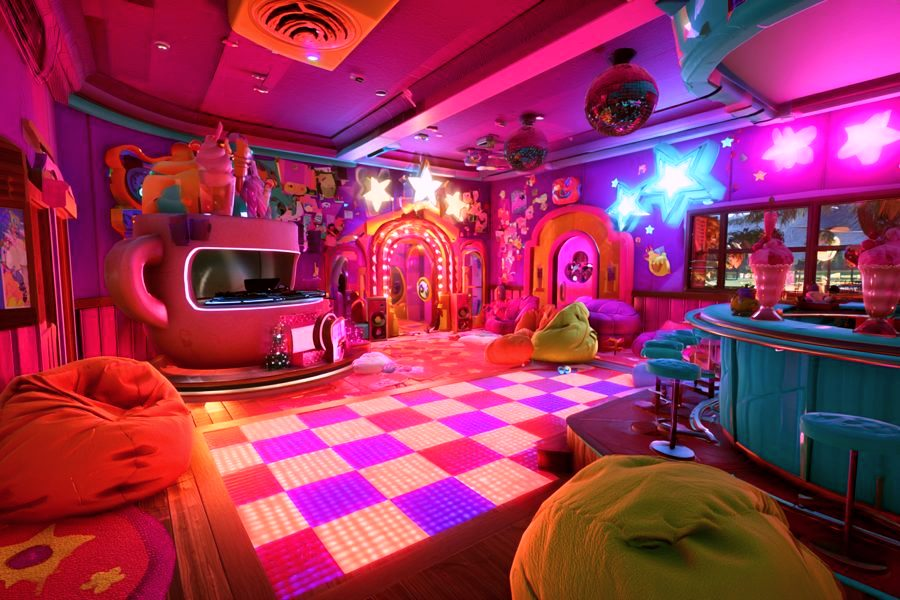
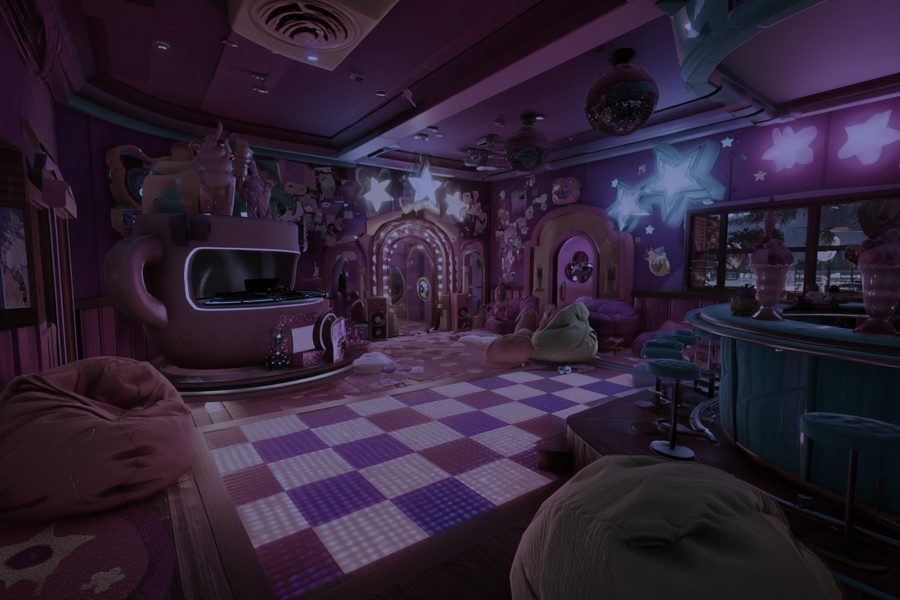
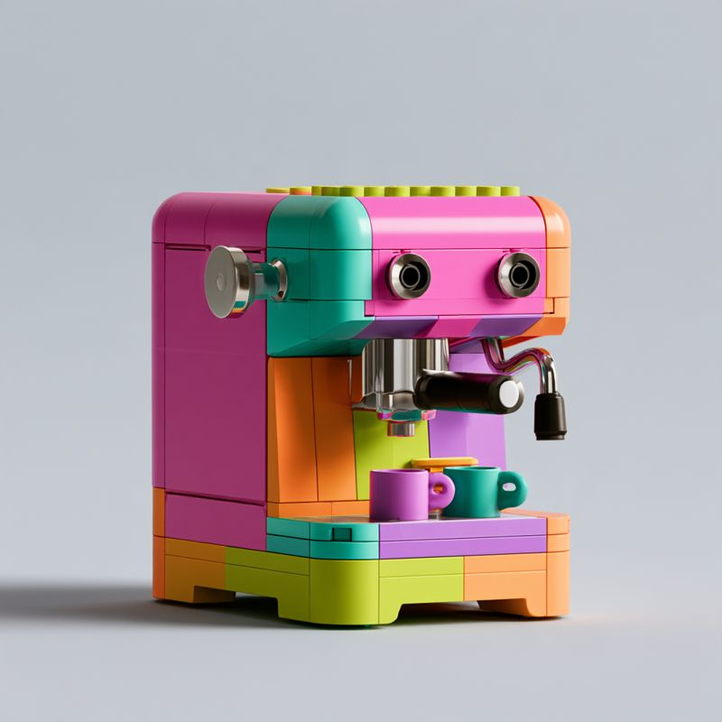
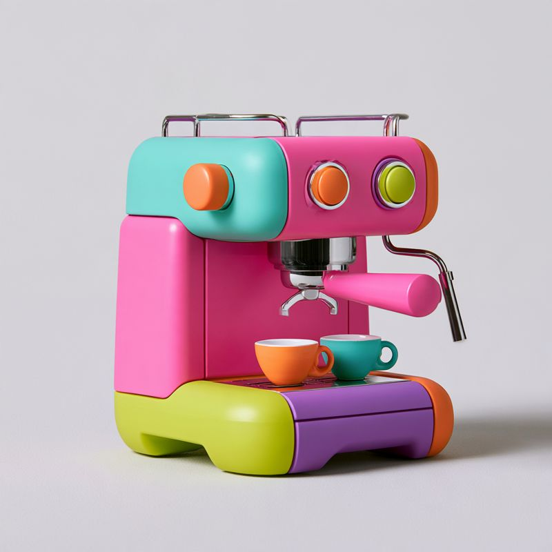
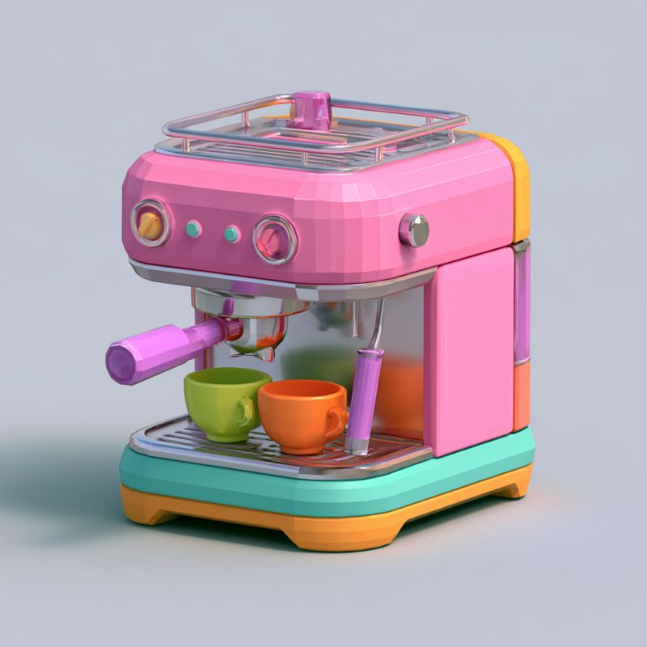

Abbie's café
A café by day, a dance party by night.

Four distances, one building



The room
123
456
Colour
Wine and plum walls, terracotta light, honey wood, teal shadow under the bar, blush highlights, neon magenta.
The accents: neon, beanbags, the bar, the stars. Surfaces stay in the deep measured colours, so the accents glow.
Soft rose and cream, neon asleep.
Crimson, magenta, a cold blue floor shadow.
Mood through the day

Morning
The crew opens up. Pets asleep. Quiet music.

Midday
Regulars, smoothies, sun on the bar.

Rush
Queue out the door, the bell rings faster.

Party
The disco ball drops. Everyone dances in sync.

Closing
Stars fly to the sign. The pets curl up.
Rough grades of your pick, to show the direction.
Lighting
The window
The one real key light. Bright by day, warm at dusk, gone at night. It drives the day.
Downlights and bulbs
Ceiling pools and the arch's marquee bulbs. Two or three real lights.
Neon and the floor
Bright unlit paint with a soft halo. The floor is one shader that pulses on the beat.
Disco sparkle
A few moving sparkle spots on the walls, no real lights.
Pink and teal bounce
Sky light tinted by the room: pink from the walls, teal from the bar.
Day to party
Time and the party level move all of it, with the music, together.
Play
Run the shop
The crew opens up, customers come, party at dusk, close and count the stars. Do anything or nothing.
Espresso
A mechatronics puzzle: fix the water, heat and pressure, then pull a golden shot.
Smoothie
A timing game: drop, blend and top on the beat.
Dance party
Follow my lead on the light-up floor, with a disco ball, real dance music and everyone in sync.
Decorate
Decoration cards, sets that combo, wall painting with the stylus, an art auction.
Your business
The café runs in your town simulation, and you run it from the grown-up workbench.
The café pets
They nap, weave, dance and tell you things. Play with them, and teach them tricks over time.
Grace's computer
A CRT you can really use, with our own typing tutor and a manual you can read.
Looks only
Skins, paint jobs, decorations and whole-café reskins.
The back bar
Pick a model style



Tap one to pick it, then Lock in. All five pieces in all three styles, where you can pick a favourite of each.